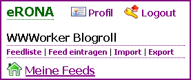

Willkommen zu eRONA: easy RSS Online News Aggregator
Die ersten Schritte
Noch ist Dein eRONA ziemlich leer. Damit es hier etwas voller wird, solltest Du ein paar Feeds abonnieren. Das geht so:

Browsen. Entweder Du suchst Dir aus der Liste der bereits eingetragenen Feeds nach und nach alle heraus, die Du kennst oder die Dich interessieren.
Hinzufügen. Oder Du gibst einfach nach und nach alle Deine Lieblingsfeeds selbst ein — das könnte eine Weile dauern ;)
Import. Die einfachste Möglichkeit, alle Deine Feeds zu abonnieren ist, eRONA eine OPML-Datei zu schicken. Die meisten Feedreader bieten die Möglichkeit, OPML-Dateien zu exportieren und darin alle wichtigen Informationen zu den Feeds zu speichern.